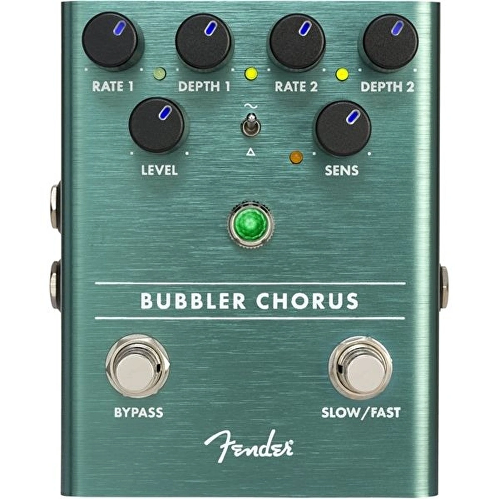
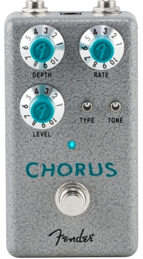

Glassy, shimmering, and bubbly - the Hammertone™ Chorus is a simple and powerful modulation device designed to deliver pristine choral sweeps. Pedal board-friendly top-mounted in & out jacks and true bypass footswitch mean it will integrate seamlessly into your rig.
It first happen in 1960 during the recording of Marty Robbin’s classic hit “Don’t Worry About Me”. Here’s the story about the first fuzz pedal creator, Glenn Snoddy.
“In 1960, Snoddy inadvertently discovered the fuzz pedal effect while working on a session for Robbins. In the middle of the song “Don’t Worry,” Grady Martin’s bass guitar started making a distorted sound because the transformer in the amplifier blew up. Snoddy later constructed a guitar pedal that would replicate the fuzz tone, which would later become a crucial element in what is now known as “The Nashville Sound.” The effect became massively influential in rock music.”
When covering “Don’t Worry About Me” on my album “This is Blues Country” I tried on all the tracks to stay true to the original melodies. When it came to “Don’t Worry About Me” I had to stay true to original fuzz sound during the solo. So I actually stacked two fuzz pedals on the track. I used the first pedal I ever owned. My parents bought it for me for Christmas in the late 1960’s, UMI Buzz Tone then stacked on top of that my Keeley Electric Mud making for one huge fuzzy mess of tone.
Glenn Snoddy passed away recently at the age of 96. His contribution to rock & roll music is still being heard today. Every time you here a fuzzed out guitar it’s because of him.
Chorus (or chorusing, choruser or chorused effect) is an audio effect that occurs when individual sounds with approximately the same time, and very similar pitches, converge. While similar sounds coming from multiple sources can occur naturally, as in the case of a choir or string orchestra, it can also be simulated using an electronic effects unit or signal processing device.
When the effect is produced successfully, none of the constituent sounds are perceived as being out of tune. It is characteristic of sounds with a rich, shimmering quality that would be absent if the sound came from a single source. The shimmer occurs because of beating. The effect is more apparent when listening to sounds that sustain for longer periods of time.
The chorus effect is especially easy to hear when listening to a choir or string ensemble. A choir has multiple people singing each part (alto, tenor, etc.). A string ensemble has multiple violinists and possibly multiples of other stringed instruments.
The chorus effect can be simulated by a range of electronic and digital effects units and signal processing equipment, including software effects. The signal processor may be software running on a computer, software running in a digital effect processor, or an analog effect processor. If the processor is hardware-based, it may be packaged as a pedal, a rack-mount module, a table-top device, built into an instrument amplifier (often an acoustic guitar amplifier or an electric guitar amplifier), or even built into some electronic instruments, such as synthesizers, electronic pianos and Hammond organs.